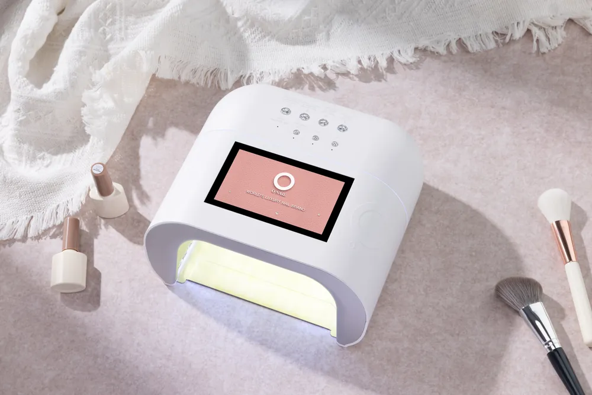
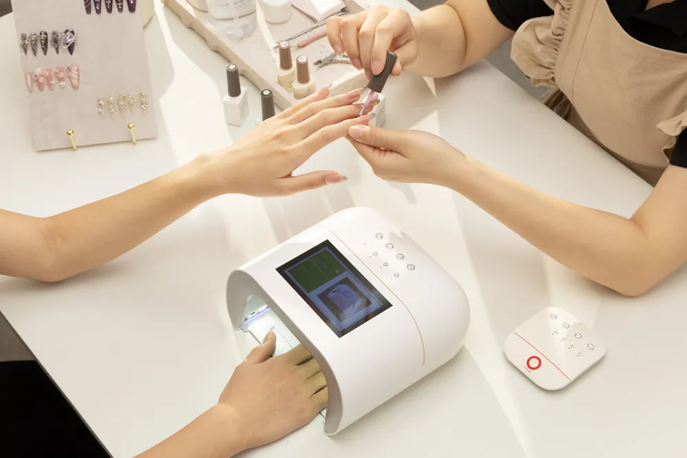
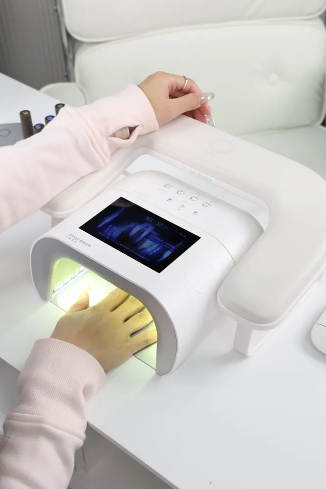
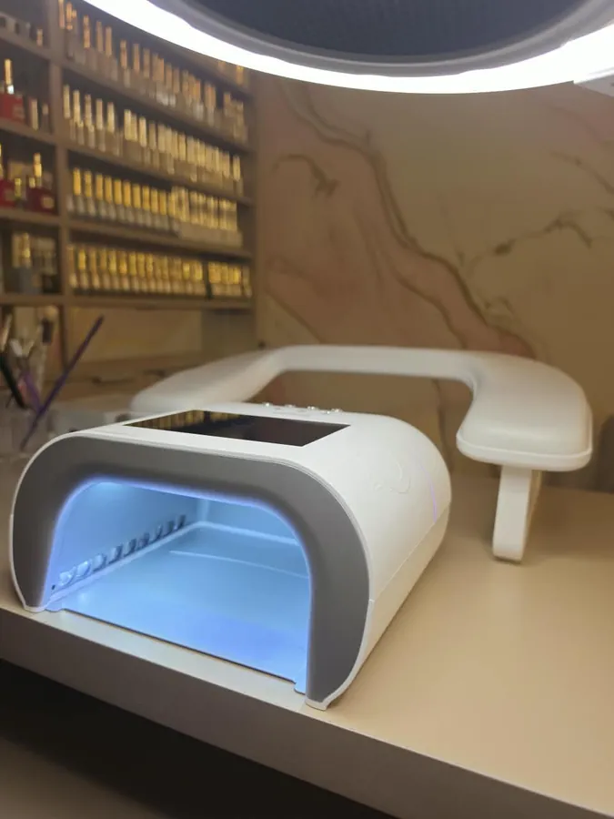
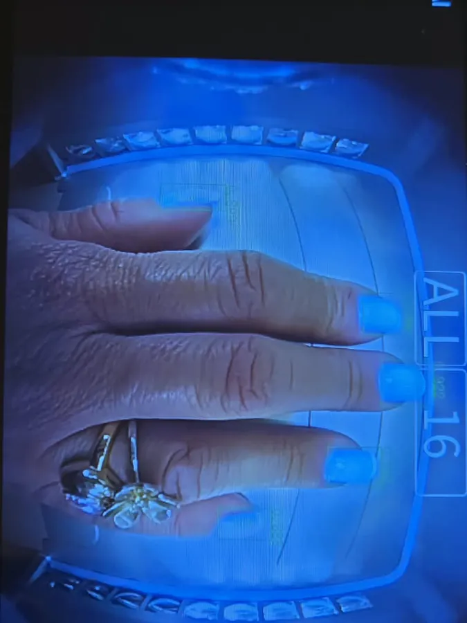
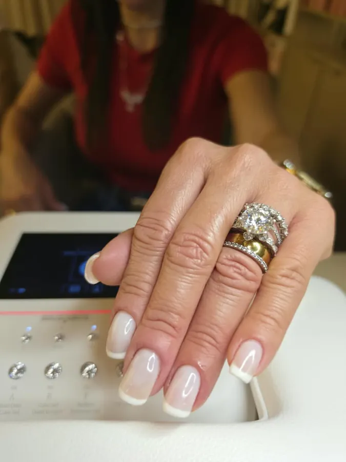
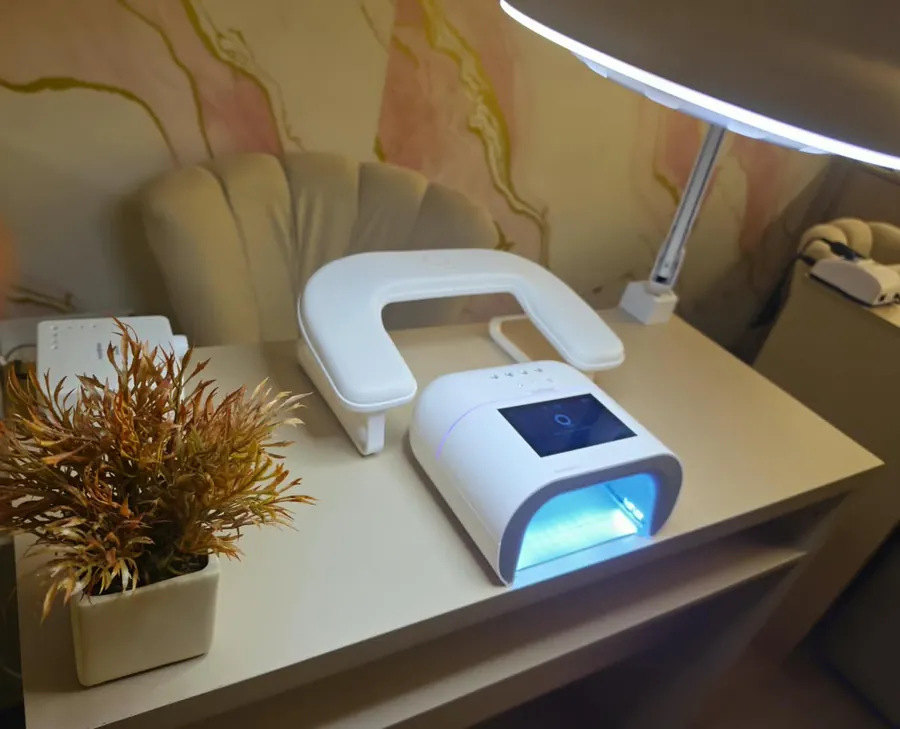
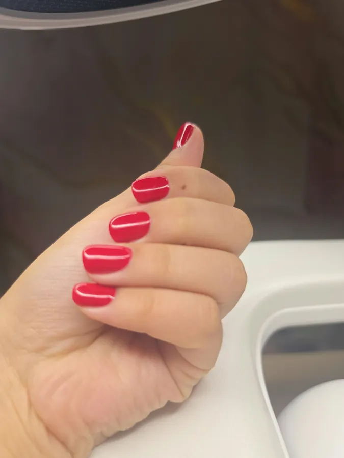
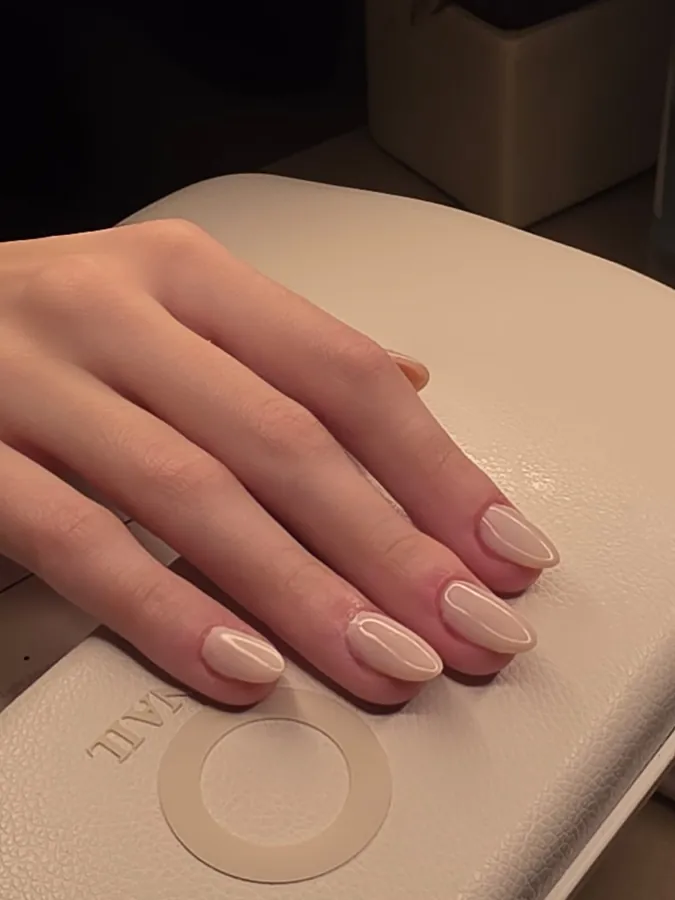

Cabine de unhas com IA em Jundiaí: a luz toca a sua unha, não a sua pele.
A cabine japonesa O NAIL reconhece a sua unha e ilumina só a unha — a sua pele é poupada da luz UV. Beleza Segura, agora com IA, em todos os atendimentos de gel. Sem mudar nada no seu preço.
Agendar SEU MOMENTO Falar no WhatsAppComo a inteligência artificial protege a sua pele
Ilumina só a unha
Um computador interno com modelo de IA de 30 milhões de parâmetros reconhece exatamente onde estão as suas unhas e direciona a luz apenas para elas — a pele ao redor não recebe UV desnecessário.*
Ainda mais express
109 LEDs de alta potência polimerizam o gel até 50% mais rápido que cabines comuns (dado da fabricante), com cobertura completa — polegares e vãos dos dedos inclusos.* Seu horário de 30 minutos fica ainda mais confortável.
Conforto no detalhe
Modos de secagem suave contra a sensação de ardência, iluminação ambiente e design premium. A tecnologia trabalha em silêncio enquanto você vive o SEU MOMENTO.



Fotos acima: O NAIL, fabricante da cabine.
Cabine comum × cabine O NAIL
| Cabine comum | Cabine O NAIL com IA | |
|---|---|---|
| Onde a luz acende | Na mão inteira, inclusive na pele em volta das unhas | Só sobre as unhas, que a inteligência artificial reconhece uma a uma* |
| Faixas de luz | Varia de modelo para modelo | Luz dupla, 365 + 405 nm, para combinar com mais fórmulas de gel* |
| Potência | Muda muito: um estudo com 17 cabines de salões achou diferença de cerca de 26 vezes na intensidade de luz entre elas1 | 109 LEDs e cerca de 30 W, potência de linha profissional* |
| Tempo de secagem | Ciclo padrão | Até 50% mais rápido que cabines comuns* |
| Polegares e vãos | Depende do modelo e da posição da mão | Cobertura completa, polegares e vãos dos dedos incluídos* |
| Você acompanha | Sem leitura das unhas por IA | A tela mostra a IA reconhecendo cada unha |
| Conforto | Nem sempre tem modo suave | Modos de secagem suave contra a sensação de ardência* |
* Dados da fabricante O NAIL. 1. Shipp LR et al. Further investigation into the risk of skin cancer associated with the use of UV nail lamps. JAMA Dermatology, 2014;150(7):775-776. DOI: 10.1001/jamadermatol.2013.8740. Além da O NAIL, o estúdio conta com outras 4 cabines certificadas pelo Inmetro.
A cabine no nosso estúdio






A cabine é a parte visível. Beleza Segura é o protocolo inteiro.
- Géis em conformidade com a Anvisa — quando a Europa proibiu o TPO, retiramos esses produtos do nosso estoque antes mesmo da decisão brasileira. Livres de TPO e DMPT; livres de HEMA por escolha nossa.
- Esterilização de padrão hospitalar — cuba ultrassônica, selagem grau cirúrgico e autoclave a 134°C, com o kit aberto na sua frente.
- Secagem inteligente — a cabine japonesa O NAIL, com IA que poupa a sua pele da luz UV.
Perguntas frequentes
O que é uma cabine de unhas com inteligência artificial?
É uma cabine de secagem de gel com um computador interno que reconhece onde estão as unhas e direciona a luz apenas para elas, evitando iluminar a pele. A O NAIL usa um modelo de IA de 30 milhões de parâmetros, segundo o fabricante.
A luz UV da cabine de unhas faz mal à pele?
A exposição frequente da pele à luz UV de cabines comuns é uma preocupação real discutida por dermatologistas. Por isso adotamos a cabine com IA, que reduz a exposição da pele à luz UV segundo o fabricante — somada ao nosso protocolo Beleza Segura.
Os géis usados aqui são liberados pela Anvisa?
Sim. Trabalhamos com produtos regularizados, em conformidade com a RDC 995/2025 da Anvisa, que proibiu o TPO e o DMPT em cosméticos (uso em salão proibido desde o início de fevereiro de 2026) — e com linhas livres de HEMA por escolha nossa.
Onde tem cabine de unhas com IA no Brasil?
Em Jundiaí, no Manicura Express Nails — a primeira cabine O NAIL da cidade. Estamos no Anhangabaú, a poucos metros da Av. Jundiaí.
Quanto tempo demora a esmaltação em gel na cabine com IA?
O atendimento express continua em cerca de 30 minutos (Manicure Gel UV, R$120). A secagem na cabine é até 50% mais rápida, segundo o fabricante.
Usar a cabine muda o preço?
Não. A cabine faz parte do investimento contínuo no pilar Beleza Segura e entra em todos os atendimentos de gel sem custo adicional.
Como chegar
Av. Comandante Videlmo Munhoz, 91, Sala 3 — Anhangabaú, Jundiaí/SP
A poucos metros da Av. Jundiaí. Seg a Sex, 9h–12h e 13h–19h30 · Sáb, 8h–12h.
Suas unhas perfeitas em 30 minutos. Agora com IA.
Tecnologia japonesa, biossegurança de padrão hospitalar e o intervalo mais inteligente da sua semana.
Agendar SEU MOMENTO*Dados técnicos informados pelo fabricante O NAIL (onail.jp). A cabine reduz a exposição da pele à luz UV; não constitui promessa de resultado de saúde.
Jornalista? Veja o kit de imprensa da primeira cabine de unhas com IA de Jundiaí, com fotos em alta e vídeos.